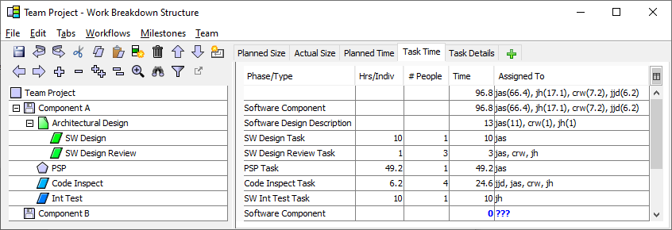
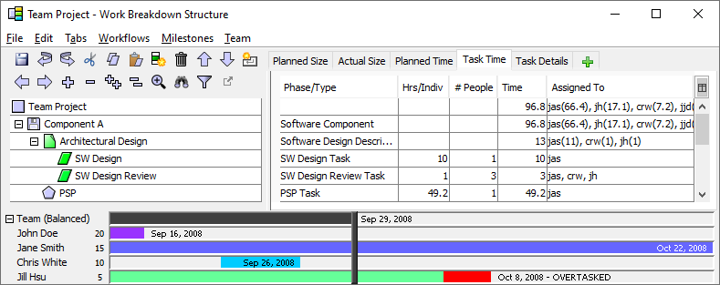
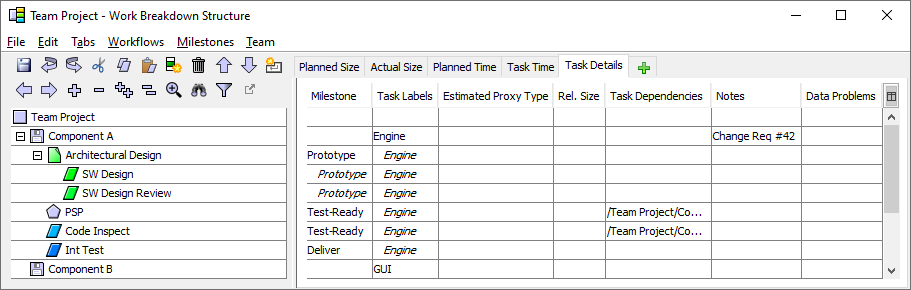

Using previously available TSP planning tools, it has been
necessary to create a balanced project plan in two steps. First, an
unbalanced top-down plan is created for the project. After this plan
is segregated into individual plans, a second effort is initiated to
reassign work so the individual plans will be balanced.
The team support for the Process Dashboard makes it possible to
perform these two tasks simultaneously. As a result, you may wish to
consider merging TSP launch meeting No. 4 and meeting No. 6 into a
single launch meeting.
- The first step in creating a team plan is to refine the high-level
components listed in the earlier team strategy meeting. This may
involve hierarchically subdividing plan components targeted for the
upcoming project phase or cycle. If you did not previously have any
documents in your work breakdown structure, you may find that you wish
to add some at this point.
For work to be performed on legacy components, it is sometimes
helpful to use the Size Accounting tab. This tab will allow you to
enter the Base size of a legacy item, as well as estimates of the
sizes of Deleted, Modified, Added, and Reused components. In keeping
with PSP guidance, the New and Changed size (N&C) is the size that
matters for cost planning purposes, so the value in that column is the
size metric that will be displayed on other tabs.

Using the Size Accounting tab is completely optional; use it only if
you find it helpful for the planning of a particular item. Many teams
find size accounting an unnecessary distraction during a high-level
team planning session like a project launch; size metrics can be
entered directly on the Size tab instead.
- Once the components are refined to the
team's satisfaction, the team is ready to plan the tasks involved in
performing the work. The simplest way to accomplish this is to apply
the common processes/workflows defined earlier. Simply select one or
more WBS items, then select an appropriate process/workflow from the
Workflow menu. The contents of the given workflow will be inserted as
children underneath each selected WBS item.
- When creating tasks, you have the option
of using PSP Tasks. PSP Task items are automatically translated into
PSP2.1 projects in an individual's dashboard hierarchy. As a result,
you do not need to explicitly add the PSP2.1 phases (Design, Design
Review, Code, Code Review, Compile, Test) in places where you have
added a PSP Task.
Generally, tasks should be subdivided until they are 10 hours or
less. PSP Task elements, however, will be automatically subdivided
into phases when they are copied into an individual's schedule. Thus,
it is acceptable for PSP Tasks to be larger than 10 hours.
- If your WBS items included sizes and
your process/workflow definitions included productivity rates, these
numbers will be used to calculate preliminary time estimates for the
tasks inserted via the process/workflow. You need not accept these
preliminary estimates. Instead, examine each task as a team and decide
whether the estimate seems reasonable, editing values as
necessary. These times are most easily viewed and edited on the Task
Time tab.

For more information on editing values in the table on the right-hand
side of the screen, see the section titled "Editing Metrics in
the Work Breakdown Structure Editor" on page 49.
- As you plan the work for the items in
your WBS, it is helpful to assign tasks to individuals as you go. This
way, the assigned individual can be allowed to provide their input
into the time estimate. To assign tasks to individuals, simply enter
team members' initials in the Assigned To column of the Task Time
tab.

To save time, you can enter assignments and time estimates all at
once in the Assigned To column. Just enter a person's initials,
followed by the time estimate (in hours). As an example, the Int
Test task above could be assigned to team member jh and
estimated at 10 hours just by entering jh 10 in the Assigned To
column.
This technique can also be used when several people are assigned to
a task, but they do not all plan to spend the same amount of
time. (This scenario is common for inspections - the author of a
product typically participates in the inspection, but due to their
different role, they will often spend more or less time than the other
participants.) Just enter the time estimate after the appropriate
person's initials. For example, if you wanted to indicate that the
individual jas would only be spending two hours in the Code
Inspection above, you could edit the Assigned To field to read jjd,
jas 2, crw, jh.
- When creating a team project plan, it is
important to ensure that the plan is balanced. In a balanced plan,
each team member has been assigned an equitable portion of the total
work, and all team members are projected to finish at approximately
the same time. A balanced plan helps to maximize team efficiency and
productivity.
The Work Breakdown Structure Editor provides a useful feedback
mechanism that helps you to balance your project plan. From the Team
menu, select the Show Bottom Up Time Panel option.

The Bottom Up Time Panel displays an entry for each team
member. The horizontal bars indicate the start date and relative
length of each team member's personal schedule. In the image above,
Jane Smith has been assigned over four times as much work as the next
team member. If you hover the mouse over each horizontal bar, a tool
tip will indicate the calculated completion date of the schedule for
that individual.
In addition, a vertical black bar shows the balanced team
completion date. This is the calculated date that the project
would complete if the work is balanced optimally. (If you hover the
mouse over this vertical bar, a tool tip will display the calculated
date.) It is easy to balance the schedule visually, since any team
member whose bar extends to the right of the vertical black line is
over-tasked, and any team member whose bar falls short of the vertical
black line is under-tasked.
During team planning, there will be times that you will prefer not
to see the Bottom Up Time Panel. You can alternately show and hide
this panel by selecting the Show Bottom Up Time Panel option from the
Team menu.
- On the Task Details tab, you can define
dependencies between tasks. You can declare dependencies on other
tasks within your own project, or on tasks in other projects that
belong to the same master project. Just double-click on a cell in this
column to enter a list of dependencies for a particular task.

Task dependencies in the dashboard are used to coordinate work
between individuals, but are not used to calculate critical
path, and do not affect the scheduling of project tasks. These
capabilities may be added in the future. But at the current time, task
dependencies are simply a way of showing individuals the information
they need in order to coordinate with their teammates more
effectively. For more information on task dependencies, please see the
Users Manual for the Process Dashboard.
- On the Task Details tab, the Task Labels
column allows you to associate keywords with the various tasks in your
WBS. If you enter keywords in this column, the team project plan
summary will allow you to filter project metrics rollups, to include
only the tasks matching a given search expression. For more
information on this filtering capability, see the "Analyzing
Filtered Data Using Labels" section of this document.
- Save the work breakdown structure
periodically by selecting the Save option from the File menu.